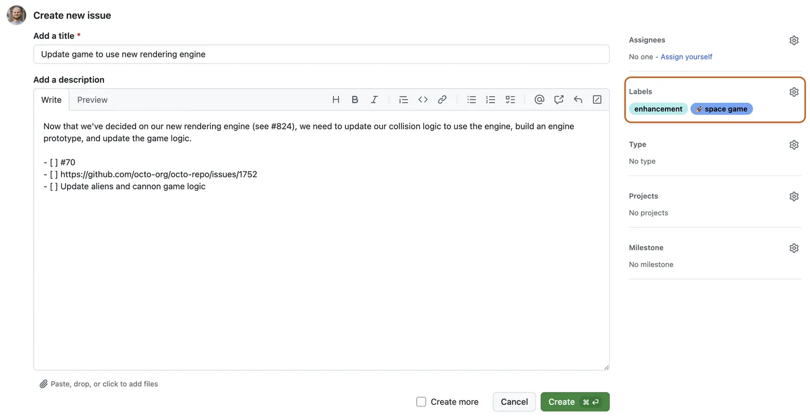
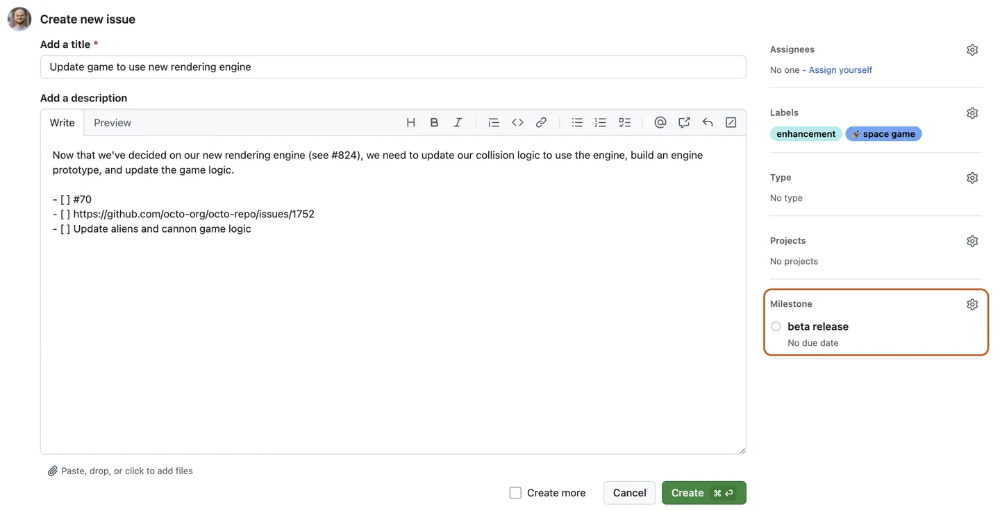
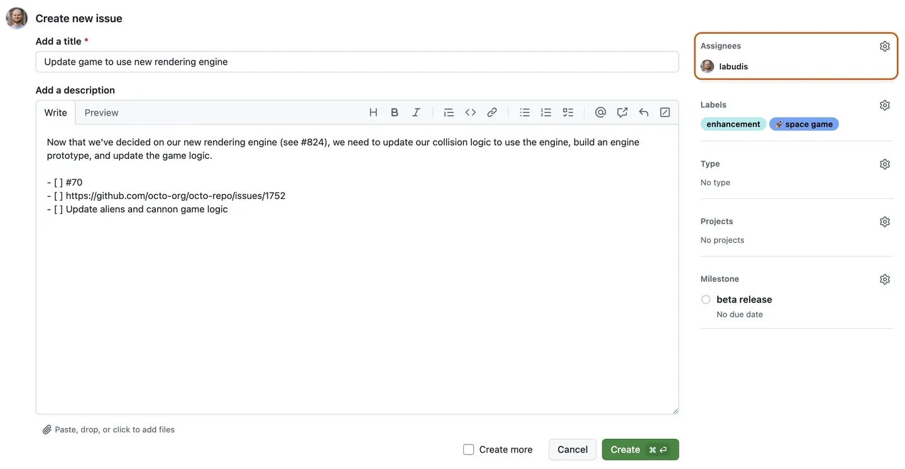
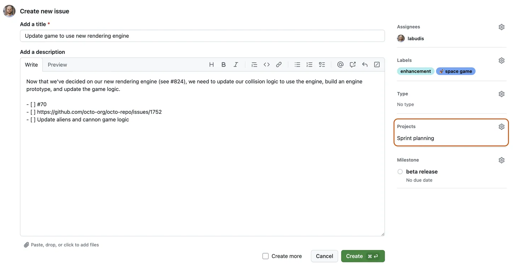
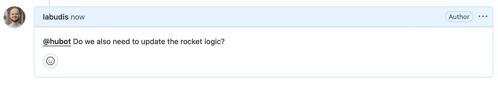

Issues
Guía rápida para Issues en GitHub
Introducción
En esta guía se muestra cómo usar GitHub Issues para planear y realizar un seguimiento de un trabajo. En esta guía, creará una nueva incidencia y agregará una lista de tareas para realizar un seguimiento de las subtareas. También aprenderá a agregar etiquetas, hitos, personas asignadas y proyectos para comunicar metadatos sobre su problema.
Prerrequisitos
- Creación de un nuevo repositorio.
- Deshabilitación de propuestas.
Abrir una incidencia en blanco
Primero, crea un problema. En este ejemplo se usará la interfaz de usuario de GitHub.
- En GitHub, vaya a la página principal del repositorio.
- Debajo del nombre del repositorio, haz clic en Cuestiones.
- Haga clic en Nuevo problema.
- En este ejemplo, comenzaremos con un problema en blanco. Tu repositorio puede usar plantillas de incidencias y formularios de incidencias para animar a los colaboradores a proporcionar información específica.
Cumplimentación de información
- Dale a tu número un título descriptivo.
- Agregue una descripción que explique el propósito del problema, incluidos los detalles que puedan ayudar a resolverlo.
Adición de una lista de tareas
Puede ser útil dividir los problemas grandes en tareas más pequeñas o viceversa.Haga referencia a los problemas existentes por número de problema o URL. Puede usar texto sin formato para realizar un seguimiento de las tareas que no tienen un problema correspondiente y convertirlas en problemas más adelante.

Adición de etiquetas
Agregue una etiqueta para categorizar su problema. Por ejemplo,puede usar una etiqueta para indicar que un problema es un error que un colaborador por primera vez podría detectar. Los usuarios pueden filtrar
Git
buggood first issue
Puede utilizar las etiquetas predeterminadas o puede crear una nueva etiqueta.
Adición de hitos
Puede agregar un hito para realizar un seguimiento del problema como parte de un objetivo basado en fechas. Un hito mostrará el progreso de los problemas a medida que se acerque la fecha objetivo.
Asignación del problema
Para comunicar la responsabilidad, puede asignar el problema a un miembro de su organización.
Agregar la propuesta a un proyecto
Puede agregar la incidencia a un proyecto existente y rellenar los metadatos del proyecto.
Envío de su problema
Haga clic en Enviar nueva incidencia para crear la misma. Tu propuesta tiene una URL única que puedes compartir con los miembros del equipo o hacer referencia a ella en otras propuestas o solicitudes de extracción.
Comunicante
Una vez creado el problema, continúe la conversación agregando comentarios al problema. Puedes @mention colaboradores o equipos para llamar su atención sobre un comentario.
